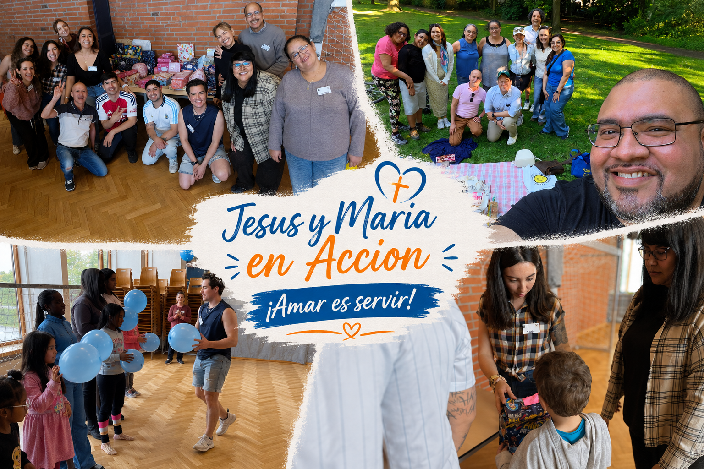

Asistencia Social
Apoyo a personas vulnerables mediante alimentos, ropa, juguetes y acompañamiento.

“Jesús y María en Acción” es un grupo católico hispanohablante en Hamburgo, dedicado al servicio y apoyo de personas necesitadas dentro de nuestra comunidad.
Nuestro lema “Amar es Servir” nos recuerda que el amor no es solo un sentimiento, sino una acción concreta para ayudar al prójimo.
Apoyo a personas vulnerables mediante alimentos, ropa, juguetes y acompañamiento.
Encuentros, convivios y espacios para fortalecer la unión de la comunidad.
Talleres y actividades que promueven integración, aprendizaje y desarrollo personal.